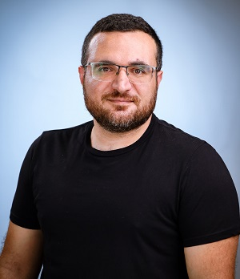

ASAdham Salih, PhD
Senior Lecturer · Department of Mechanical Engineering · Braude College of Engineering
I develop and apply evolutionary computation — especially neuro-evolution, control, evolutionary robotics, and multi/many-objective optimization.
Research
Computational Intelligence
Bio-inspired computational tools — mainly artificial neural networks, fuzzy logic and evolutionary computation — applied in engineering, with a particular interest in multi-objective optimization.
Evolutionary Multi-objective Optimization
Optimization problems with conflicting objectives, where the goal is to approximate the Pareto-optimal set. Engineering applications including multi-objective robust optimization and multi-objective neuro-evolution.
Evolutionary Robotics & Neuro-control
Automatically evolving robot controllers and related components. Design of neuro-controllers and the use of these tools for brain–computer interfaces.
Publications
Refereed journal papers
- Mardiks, G., Salih, A., & Moshaiov, A. (2026). Class-based many-objective neural architecture search for deep classifiers. Neural Computing & Applications, 38, 800. DOI
- Denenberg, E., & Salih, A. (2026). Bi-level evolutionary framework for designing multi-debris active removal missions. Acta Astronautica. DOI
- Salih, A., & Eisenstadt Matalon, E. (2025). Game-based multi-objective evolution of robust controllers. ISA Transactions. DOI
- Weiss, A., Ben-Hanan, U., & Salih, A. (2025). Dynamics mimicking — enabling robot operation for wheelchair users. IEEE Sensors Journal. DOI
- Salih, A., Roth, N., Buganim, O., & Pelosi, A. D. (2024). A low-cost open-source uniaxial tensile system for soft tissue testing. Hardware, 2, 292–305.
- Salih, A., & Eisenstadt Matalon, E. (2024). Solving multi-objective robust optimization problems via Stackelberg-based game model. Swarm and Evolutionary Computation, 91, 101734.
- Roth, N., Salih, A., & Rosenblum, S. (2024). Subjective and objective day-to-day performance measures of people with essential tremor. Sensors, 24(15), 4854.
- Salih, A., Gabbay, J., & Moshaiov, A. (2024). Transferability of multi-objective neuro-fuzzy motion controllers: Towards cautious and courageous motion behaviors in rugged terrains. Mathematics, 12(7), 992.
- Salih, A., & Moshaiov, A. (2024). Neuro-evolution-based generic missile guidance law for many-scenarios. Applied Soft Computing, 152, 111210.
- Salih, A., & Moshaiov, A. (2022). Evolving topology and weights of specialized and non-specialized neuro-controllers for robot motion in various environments. Neural Computing and Applications.
- Salih, A., & Moshaiov, A. (2022). Promoting transfer of robot neuro-motion-controllers by many-objective topology and weight evolution. IEEE Transactions on Evolutionary Computation.
- Benyamin, O. B., Juvinao, D., Berlinsky, T., Salih, A., Solomonov, E., Waksman, I., & Biswas, S. (2022). Designing engineering solutions to surgical problems: how to translate physiology to biomechanics. Journal of The Institution of Engineers (India): Series C, 103(5), 1095–1102.
Conference proceedings
- Salih, A., & Moshaiov, A. (2022). Benchmarking many-objective topology and weight evolution of neural networks: A study with NEWS/D. 2021 IEEE Symposium Series on Computational Intelligence (SSCI), pp. 1–6.
- Moshaiov, A., & Salih, A. (2022). Multi-objective structure and parameter evolution of neuro-fuzzy systems. 2021 IEEE Symposium Series on Computational Intelligence (SSCI), pp. 1–7.
- Salih, A., & Moshaiov, A. (2021). Modified decomposition framework and algorithm for many-objective topology and weight evolution of neural networks. 2021 IEEE Congress on Evolutionary Computation (CEC), pp. 1478–1485.
- Salih, A., & Moshaiov, A. (2017). Multi-objective neuro-evolution: Should the main reproduction mechanism be crossover or mutation? 2016 IEEE International Conference on Systems, Man, and Cybernetics (SMC), pp. 4585–4590.
Full and up-to-date list: Google Scholar.
Teaching
Fall 2024–2025
- Dynamics of Rigid Bodies
- Signals and Systems
- Introduction to Mechatronics
- Mechatronics Laboratory
Spring 2024–2025
- Dynamics of Rigid Bodies
- Signals and Systems
- Integrated Systems
- Mechatronics Laboratory
AAMAS 2026 Tutorial
Multi-objective Optimization and its Applications for Agent Systems
Pareto-optimality is a well-known approach to support decision-making when objectives are conflicting. This tutorial introduces Pareto-based multi-objective optimization for single- and multi-agent systems: fundamentals, leading algorithms, agent-system applications, advantages, and open research needs. Open to all AAMAS 2026 participants; no special prerequisites.
| 08:45–10:15 | Types of multi-objective problems, vector domination, Pareto-optimal sets and fronts, first-generation MOEAs (e.g., NSGA-II) |
| 10:15–11:00 | Poster session 1 & coffee break |
| 11:00–12:00 | Advanced MOEAs (e.g., MOEA/D); extending Pareto-optimality to multi-payoff games |
| 12:00–12:30 | Applications to single- and multi-agent systems; research needs |
Presenters: Amiram Moshaiov (Tel-Aviv University) · Adham Salih (Braude College of Engineering)
Contact
Adham Salih
Department of Mechanical Engineering
Braude College of Engineering
Snunit 53, Karmiel 2161002, Israel
adhamsalih@braude.ac.il